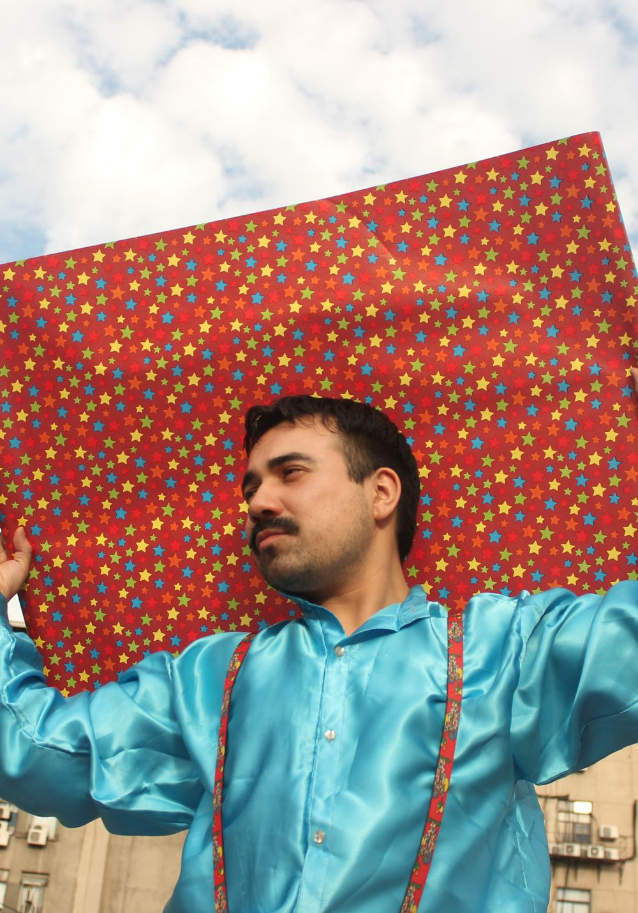

Se rompe la métrica
Grabadas sin metrónomo, de una vez y a destiempo. El temblor y el desajuste no se corrigen: se adaptan.

Dossier de presentación
Canciones lindas y tristes, y una antibalada para cantarlas.
Antibalada Conoce la propuestaLindoytriste es el proyecto solista de César Carreño Montecino, músico, compositor y realizador audiovisual chileno. Comienza su desarrollo en 2023 y se lanza oficialmente en 2025 con La caída de la casa, su primer single.
Su propuesta nace desde la canción romántica y la balada alternativa, explorando el amor, la pérdida, la distancia, la incomunicación, la soledad y la ilusión. Su sonido combina guitarras, samplers y atmósferas inquietantes con una sensibilidad íntima y narrativa.
Propone un romanticismo visceral a partir de canciones lindas y tristes, que transforman experiencias personales en relatos capaces de generar identificación y acompañamiento. Incorpora además una perspectiva queer, abordando el amor y los vínculos sin restricciones de género.
La propuesta
Canciones acústicas que abrazan la disonancia, se apartan de la métrica tradicional y se resisten a lo comercial. Una balada que se desarma y se vuelve a armar sin más instrucciones que la intuición y la experimentación.
Grabadas sin metrónomo, de una vez y a destiempo. El temblor y el desajuste no se corrigen: se adaptan.
Una base mínima de guitarra acústica y samplers, con una emocionalidad sin barniz.
Emparentada con las anticuecas de Violeta Parra y la antipoesía de Nicanor Parra, trasladadas al formato canción.
Creo que es un formato más democrático y que abraza cosas que a veces la gente quiere evitar.
Primer EP, enero 2026

“Como un circo acústico y experimental”, define Lindoytriste a su primer EP.
Seis canciones en tan solo ocho minutos que profundizan la antibalada: un recorrido íntimo y surreal que va del fracaso a la persistencia, pasando por el dolor, la ternura y una nostalgia infantil que no se abandona. “Es más como un circo mental”, dice su autor, que además produjo el EP.
La voz de Chespirito abre y cierra el disco como un gesto lúdico, que presenta el circo no como espectáculo sino como estado mental.

Single debut, 2025
Una canción frágil pero demoledora sobre la pérdida del primer amor.
Fue escrita como un poema a fines de 2017 y se transformó en canción. Su narrativa reimagina el cuerpo como una casa que se derrumba: una fachada agrietada donde la pena se vuelve un canto lento.
Se construye con doce versos, una guitarra acústica y un puñado de sonidos que rebotan como ecos de un pasado.
Imagen y relato
La dimensión audiovisual es parte central del proyecto: cada canción tiene su propio mundo visual.
2025
Dirigido y postproducido por César Carreño Montecino. Lindoytriste se presenta como un muñeco olvidado que se esfuerza por no olvidarse de sí mismo.
2026
Grabado con una handycam en los Juegos Diana, con Mia Loops y Javier Galindo en dirección de fotografía y cámara. Un payaso de rodeo frustrado con una brillante pistola en mano.
2026
Del EP Un circo. La canción que habla de trascendencia, con un guiño a “Otra era” de Javiera Mena.
Trayectoria
2023
El repertorio se prueba en vivo como una instancia de experimentación. Feria Amo Comer, Casona Compañía, Santiago.
2024
Presentación audiovisual publicada en YouTube.
2025
Primer single y videoclip: La caída de la casa.
2026
Un circo, con los videoclips de Tiro al blanco y Pirámide.
2027
La última ilusión, proyectado.
Circulación
La Rata
Un EP que toma la balada, la desarma y la vuelve a armar sin instrucciones más que la intuición y la experimentación.
Mantra Musical
Una canción frágil pero demoledora que se construye a partir de 12 versos, una guitarra acústica y un puñado de sonidos que rebotan como ecos de un pasado.
La propuesta busca conectar con públicos vinculados a la canción romántica, la balada, el pop de autor y la música independiente, incorporando también una dimensión queer que forma parte de la identidad artística del proyecto.
La recepción en vivo ha mostrado posibilidades de conexión con públicos de distintas edades, especialmente con personas que mantienen un vínculo con la canción romántica y sus formatos físicos.
Próxima etapa, 2027
El segundo EP de Lindoytriste, proyectado para 2027, explora un amor imposible marcado por la distancia, la incomunicación, la ilusión y la ternura.
Musicalmente avanza hacia canciones más melódicas, directas y accesibles, explorando nuevas posibilidades para la canción romántica sin abandonar la sensibilidad narrativa, la experimentación y la identidad de las primeras etapas.
El proyecto busca consolidarse como un exponente destacado de la canción romántica contemporánea en Chile, ampliando progresivamente su circulación hacia Latinoamérica y otros circuitos internacionales. La estrategia de lanzamiento contempla singles, producción audiovisual, difusión nacional e internacional, distribución física y digital y un concierto de lanzamiento.